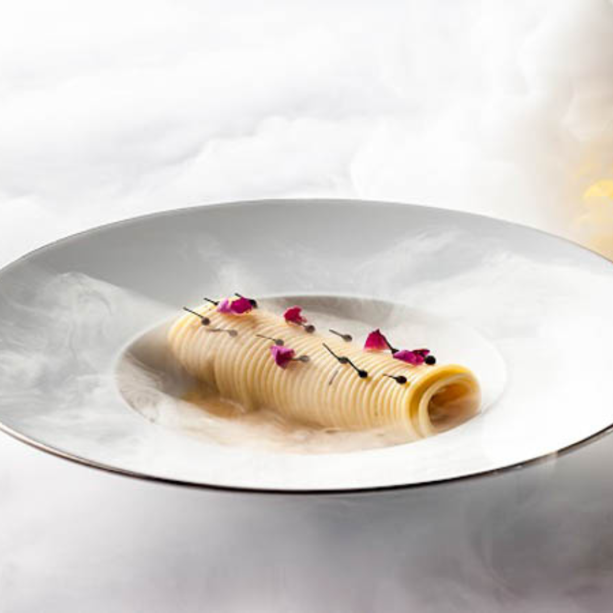

For the rose infusion, heat the chicken broth up to 60 C, add the rosebuds in infusion for 4/5 minutes and filtrate with a strainer. For the sauce, heat the olive oil in a pan, add the pepper, previously crushed in a mortar, and then add the broth. It is now time to proceed with cooking the pasta. Add the pasta, cooked al dente, to the sauce and keep on cooking at low fire. Now that pasta is ready, add pecorino cheese, extra virgin olive oil and using a fork, mix until it's creamy. End the dish with a dust of freshly crushed pepper.